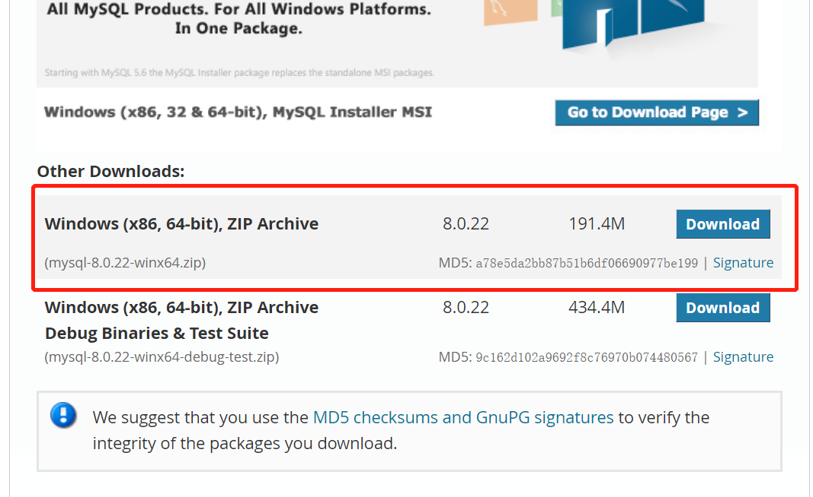
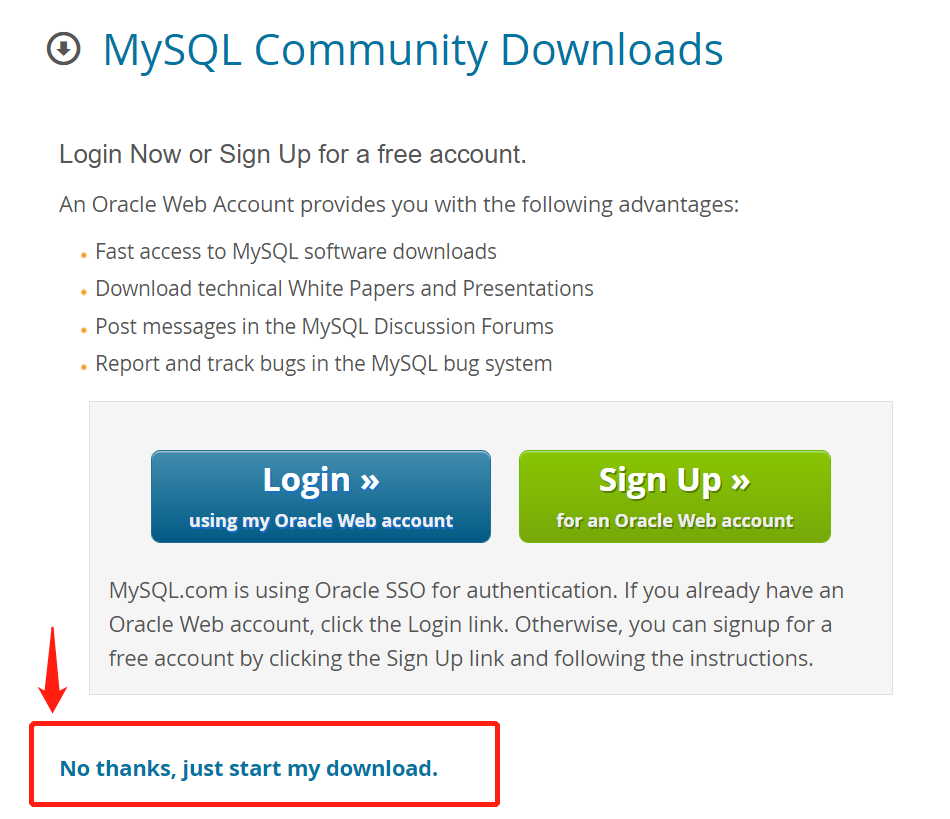
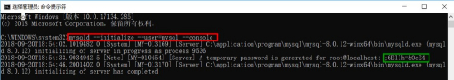

下载Mysql
官网下载地址

注意下边这个选项，不需要登录oracle也可以下载：

之后在本地解压，我这里是解压到D:\software\mysql-8.0.22-winx64
配置环境变量
在环境变量-系统变量-Path中加入D:\software\mysql-8.0.22-winx64\bin
配置Mysql的my.ini文件
在 D:\software\mysql-8.0.22-winx64目录下新建一个my.ini文件
内容为：
[mysqld]
# 设置3306端口
port=3306
# 设置mysql的安装目录
basedir=D:\\software\\mysql-8.0.22-winx64
# 设置mysql数据库的数据的存放目录
datadir=D:\\software\\mysql-8.0.22-winx64\\data
# 允许最大连接数
max_connections=200
# 允许连接失败的次数。这是为了防止有人从该主机试图攻击数据库系统
max_connect_errors=10
# 服务端使用的字符集默认为UTF8
character-set-server=utf8
# 创建新表时将使用的默认存储引擎
default-storage-engine=INNODB
[mysql]
# 设置mysql客户端默认字符集
default-character-set=utf8
[client]
# 设置mysql客户端连接服务端时默认使用的端口
port=3306
default-character-set=utf8
初始化MySQL
- 以管理员身份打开cmd命令窗口或Windows powershell，输入命令：
mysqld --initialize --user=mysql --console

绿框里的就是root的初始密码，把它复制下来保存 - 在命令窗口输入命令：
mysqld --install。至此，service成功安装。
开启服务
- 在命令窗口输入命令：
net start mysql开启服务（只有开启服务才能连接和操作数据库） - 在命令窗口输入命令登录：
mysql -u root -p，下一行会要求enter password，就把刚刚复制下来保存的初始密码粘贴进来。 - 登录进来之后可更改初始密码，例如改为“123”，输入命令：
set password='123';（注意一定要加分号） - 现在，账号为：
root，密码为：123 - 如果要通过python连接数据库，还需要更改身份认证方式，即在命令窗口输入
ALTER USER 'root'@'localhost' IDENTIFIED WITH mysql_native_password BY "123"（因为MySQL 8.0以后，默认的密码加密方式是caching_sha2_password而不是mysql_native_password。不输入这条命令会提示 Authentication plugin ‘caching_sha2_password’ is not supported。） - 退出mysql命令：
quit
python连接数据库
python -m pip install mysql-connector安装驱动连接Mysql代码：
import mysql.connector mydb = mysql.connector.connect( host="localhost", # 数据库主机地址 user="root", # 数据库用户名 passwd="123", # 数据库密码 auth_plugin='mysql_native_password' ) print(mydb)